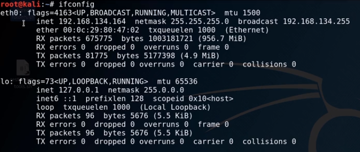

ifconfig : to see n/w configuration.

iwconfig : to see wireless n/w configuration

ping : to ping ip address

it a way od association of IP adresss with mac adress

netstat : n/w statics : is show active connection running on network..

route : it shows routing table .